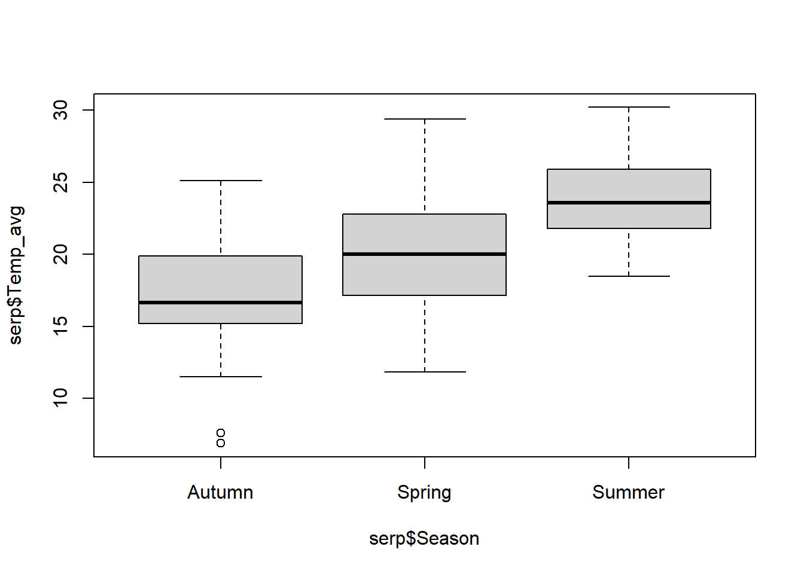

2 Modelos lineales generalizados
2.1 Datos de presencia-ausencia
Cabral et al. (2007) estudiaron la distribución de platijas (Solea solea) en el estuario Tagus, Portugal (Solea.txt). Se desea saber qué factores (temperatura, transparencia, salinidad) están relacionados con la presencia esta especie.
## 'data.frame': 65 obs. of 13 variables:
## $ Sample : int 1 2 3 4 5 6 7 8 9 10 ...
## $ season : int 1 1 1 1 1 1 1 1 1 1 ...
## $ month : int 5 5 5 5 5 5 5 5 5 5 ...
## $ Area : int 2 2 2 4 4 4 3 3 3 1 ...
## $ depth : num 3 2.6 2.6 2.1 3.2 3.5 1.6 1.7 1.8 4.5 ...
## $ temperature : int 20 18 19 20 20 20 19 17 19 21 ...
## $ salinity : int 30 29 30 29 30 32 29 28 29 12 ...
## $ transparency : int 15 15 15 15 15 7 15 10 10 35 ...
## $ gravel : num 3.74 1.94 2.88 11.06 9.87 ...
## $ large_sand : num 13.15 4.99 8.98 11.96 28.6 ...
## $ med_fine_sand: num 11.93 5.43 16.85 21.95 19.49 ...
## $ mud : num 71.2 87.6 71.3 55 42 ...
## $ Solea_solea : int 0 0 1 0 0 0 1 1 0 1 ...##
## 0 1
## 39 26## Area depth temperature salinity transparency gravel large_sand
## Area 1.00 -0.55 -0.18 0.76 -0.56 0.44 -0.44
## depth -0.55 1.00 0.14 -0.66 0.57 -0.24 0.31
## temperature -0.18 0.14 1.00 -0.35 0.54 -0.16 0.12
## salinity 0.76 -0.66 -0.35 1.00 -0.66 0.38 -0.54
## transparency -0.56 0.57 0.54 -0.66 1.00 -0.25 0.37
## gravel 0.44 -0.24 -0.16 0.38 -0.25 1.00 0.01
## large_sand -0.44 0.31 0.12 -0.54 0.37 0.01 1.00
## med_fine_sand -0.69 0.67 0.25 -0.80 0.69 -0.32 0.56
## mud 0.49 -0.47 -0.16 0.63 -0.52 -0.19 -0.87
## med_fine_sand mud
## Area -0.69 0.49
## depth 0.67 -0.47
## temperature 0.25 -0.16
## salinity -0.80 0.63
## transparency 0.69 -0.52
## gravel -0.32 -0.19
## large_sand 0.56 -0.87
## med_fine_sand 1.00 -0.78
## mud -0.78 1.002.1.1 GLM binomial
m.bin <- glm(Solea_solea ~ temperature + transparency + salinity, family = binomial, data = datos)
summary(m.bin)##
## Call:
## glm(formula = Solea_solea ~ temperature + transparency + salinity,
## family = binomial, data = datos)
##
## Deviance Residuals:
## Min 1Q Median 3Q Max
## -2.2170 -0.7607 -0.6364 0.7219 1.8447
##
## Coefficients:
## Estimate Std. Error z value Pr(>|z|)
## (Intercept) 5.221629 3.524358 1.482 0.13845
## temperature -0.100542 0.148829 -0.676 0.49932
## transparency -0.001162 0.025347 -0.046 0.96343
## salinity -0.142652 0.049986 -2.854 0.00432 **
## ---
## Signif. codes: 0 '***' 0.001 '**' 0.01 '*' 0.05 '.' 0.1 ' ' 1
##
## (Dispersion parameter for binomial family taken to be 1)
##
## Null deviance: 87.492 on 64 degrees of freedom
## Residual deviance: 67.973 on 61 degrees of freedom
## AIC: 75.973
##
## Number of Fisher Scoring iterations: 42.1.2 Diagnósticos


## Warning: package 'DHARMa' was built under R version 4.0.5## Registered S3 methods overwritten by 'lme4':
## method from
## cooks.distance.influence.merMod car
## influence.merMod car
## dfbeta.influence.merMod car
## dfbetas.influence.merMod car## This is DHARMa 0.4.5. For overview type '?DHARMa'. For recent changes, type news(package = 'DHARMa')
2.1.3 Bondad del ajuste
##
## Call:
## glm(formula = Solea_solea ~ temperature + transparency + salinity,
## family = binomial, data = datos)
##
## Deviance Residuals:
## Min 1Q Median 3Q Max
## -2.2170 -0.7607 -0.6364 0.7219 1.8447
##
## Coefficients:
## Estimate Std. Error z value Pr(>|z|)
## (Intercept) 5.221629 3.524358 1.482 0.13845
## temperature -0.100542 0.148829 -0.676 0.49932
## transparency -0.001162 0.025347 -0.046 0.96343
## salinity -0.142652 0.049986 -2.854 0.00432 **
## ---
## Signif. codes: 0 '***' 0.001 '**' 0.01 '*' 0.05 '.' 0.1 ' ' 1
##
## (Dispersion parameter for binomial family taken to be 1)
##
## Null deviance: 87.492 on 64 degrees of freedom
## Residual deviance: 67.973 on 61 degrees of freedom
## AIC: 75.973
##
## Number of Fisher Scoring iterations: 4## [1] 0.2230856## Warning: package 'performance' was built under R version 4.0.5## Tjur's R2
## 0.28408082.1.4 Gráfico del modelo
library(visreg)
visreg(fit = m.bin, xvar = "salinity", scale = "response", ylim = c(0, 1),
xlab = "Salinidad", ylab = "Probabilidad de presencia")
points(datos$salinity, datos$Solea_solea)
2.1.5 Interpretación de los coeficientes
## temperature
## 0.9043472Esto quiere decir que, por unidad de salinidad, la relacion \(\frac{P(presencia)}{P(ausencia)}\) (odd) disminuye en 0.90 unidades
2.1.6 Ecuación
## Warning: package 'equatiomatic' was built under R version 4.0.5\[ \log\left[ \frac { \widehat{P( \operatorname{Solea\_solea} = \operatorname{1} )} }{ 1 - \widehat{P( \operatorname{Solea\_solea} = \operatorname{1} )} } \right] = 5.22 - 0.1(\operatorname{temperature}) + 0(\operatorname{transparency}) - 0.14(\operatorname{salinity}) \]
2.2 Conteos I
Gotelli & Ellison (2002) analizaron los determinantes biogeográficos de la riqueza de hormigas (Srich) a escala regional (hormigas.txt). Para esto se describieron el tipo de hábitat (Habitat), la latitud (Latitude) y la altitud (Elevation).
## 'data.frame': 44 obs. of 5 variables:
## $ Site : chr "TPB" "HBC" "CKB" "SKP" ...
## $ Srich : int 6 16 18 17 9 15 7 12 14 9 ...
## $ Habitat : chr "Forest" "Forest" "Forest" "Forest" ...
## $ Latitude : num 42 42 42 42 42 ...
## $ Elevation: int 389 8 152 1 210 78 47 491 121 95 ...## Srich Latitude Elevation
## Srich 1.00 -0.44 -0.38
## Latitude -0.44 1.00 0.18
## Elevation -0.38 0.18 1.00hist(h$Srich, xlab = "Número de especies", ylab = "Frecuencia relativa", main = "", freq = FALSE)
# Ajuste de distribución a los datos
sim.pois <- dpois(x = 0:max(h$Srich), lambda = mean(h$Srich))
lines(x = 0:max(h$Srich), y = sim.pois, col = "blue", lwd = 2, type = "b")## [1] 2.5663432.2.1 GLMs Poisson y quasi-Poisson
2.2.1.1 GLM Poisson
##
## Call:
## glm(formula = Srich ~ Latitude + Elevation + Habitat, family = poisson,
## data = h)
##
## Deviance Residuals:
## Min 1Q Median 3Q Max
## -2.20939 -0.72643 -0.05933 0.51571 2.60147
##
## Coefficients:
## Estimate Std. Error z value Pr(>|z|)
## (Intercept) 11.9368121 2.6214970 4.553 5.28e-06 ***
## Latitude -0.2357930 0.0616638 -3.824 0.000131 ***
## Elevation -0.0011411 0.0003749 -3.044 0.002337 **
## HabitatForest 0.6354389 0.1195664 5.315 1.07e-07 ***
## ---
## Signif. codes: 0 '***' 0.001 '**' 0.01 '*' 0.05 '.' 0.1 ' ' 1
##
## (Dispersion parameter for poisson family taken to be 1)
##
## Null deviance: 102.76 on 43 degrees of freedom
## Residual deviance: 40.69 on 40 degrees of freedom
## AIC: 209.04
##
## Number of Fisher Scoring iterations: 42.2.1.2 GLM quasi-Poisson
m.qpois <- glm(Srich ~ Latitude + Elevation + Habitat, family = quasipoisson, data = h)
summary(m.qpois)##
## Call:
## glm(formula = Srich ~ Latitude + Elevation + Habitat, family = quasipoisson,
## data = h)
##
## Deviance Residuals:
## Min 1Q Median 3Q Max
## -2.20939 -0.72643 -0.05933 0.51571 2.60147
##
## Coefficients:
## Estimate Std. Error t value Pr(>|t|)
## (Intercept) 11.9368121 2.6594025 4.489 5.94e-05 ***
## Latitude -0.2357930 0.0625554 -3.769 0.000529 ***
## Elevation -0.0011411 0.0003803 -3.000 0.004626 **
## HabitatForest 0.6354389 0.1212952 5.239 5.52e-06 ***
## ---
## Signif. codes: 0 '***' 0.001 '**' 0.01 '*' 0.05 '.' 0.1 ' ' 1
##
## (Dispersion parameter for quasipoisson family taken to be 1.029128)
##
## Null deviance: 102.76 on 43 degrees of freedom
## Residual deviance: 40.69 on 40 degrees of freedom
## AIC: NA
##
## Number of Fisher Scoring iterations: 4# Parámetro de sobredispersión
resid <- residuals(m.qpois, type = "pearson")
nparam <- length(m.qpois$coeff)
ndatos <- nrow(h)
disp.param <- sum(resid^2)/(ndatos - nparam)
disp.param## [1] 1.029116##
## Call:
## glm(formula = Srich ~ 1, family = quasipoisson, data = h)
##
## Deviance Residuals:
## Min 1Q Median 3Q Max
## -2.2409 -1.2420 -0.3959 0.4492 3.4539
##
## Coefficients:
## Estimate Std. Error t value Pr(>|t|)
## (Intercept) 1.94915 0.09113 21.39 <2e-16 ***
## ---
## Signif. codes: 0 '***' 0.001 '**' 0.01 '*' 0.05 '.' 0.1 ' ' 1
##
## (Dispersion parameter for quasipoisson family taken to be 2.566343)
##
## Null deviance: 102.76 on 43 degrees of freedom
## Residual deviance: 102.76 on 43 degrees of freedom
## AIC: NA
##
## Number of Fisher Scoring iterations: 5
##
## DHARMa nonparametric dispersion test via sd of residuals fitted vs.
## simulated
##
## data: simulationOutput
## dispersion = 1.0136, p-value = 0.92
## alternative hypothesis: two.sided2.2.1.3 Diagnósticos
residP <- resid(m.qpois, type = "pearson") # residuos de Pearson
residD <- resid(m.qpois, type = "deviance") # residuos de devianza
pred <- predict(m.qpois, type = "response") # valores predichos
plot(pred, residP) 


2.2.1.5 Ecuación
\[ \log ({ \widehat{E( \operatorname{Srich} )} }) = 11.94 - 0.24(\operatorname{Latitude}) + 0(\operatorname{Elevation}) + 0.64(\operatorname{Habitat}_{\operatorname{Forest}}) \]
2.2.1.6 Gráfico del modelo
library(visreg)
visreg(fit = m.qpois, xvar = "Latitude", by = "Habitat", overlay = TRUE,
scale = "response", xlab = "Latitud", ylab = "Número de especies",
type = "conditional", cond = list(Latitude = mean(h$Latitude), Elevation = mean(h$Elevation)))
bg <- h[h$Habitat == "Bog", ]
ft <- h[h$Habitat == "Forest", ]
points(bg$Latitude, bg$Srich, pch=19, col = "red")
points(ft$Latitude, ft$Srich, pch=19, col = "blue")
2.2.2 GLM binomial negativo
Leong et al. (2014) estudiaron el efecto del paisaje (urbano, agrícola y natural) sobre el número de interacciones de polinizadores nativos en \(Centaurea solstitialis\) (Asteraceae). Se quiere evaluar si existen diferencias en el número de interacciones (total) entre los 3 tipos de ambientes (type) teniendo en cuenta la temperatura (temp) y la velocidad del viento (wind).
## 'data.frame': 36 obs. of 34 variables:
## $ locality : chr "arabian" "arabian" "arabian" "bdm_f" ...
## $ type : chr "a" "a" "a" "n" ...
## $ lat : num 37.9 37.9 37.9 38 38 ...
## $ long : num -122 -122 -122 -122 -122 ...
## $ water : int 0 0 0 0 0 0 0 0 0 0 ...
## $ urban : int 18900 18900 18900 37800 37800 37800 4500 4500 4500 198000 ...
## $ agr : int 252000 252000 252000 0 0 0 16200 16200 16200 558000 ...
## $ natural : int 513900 513900 513900 747900 747900 747900 765000 765000 765000 32400 ...
## $ bare : int 1800 1800 1800 0 0 0 0 0 0 0 ...
## $ bloom.cat : int 3 3 3 3 3 3 4 4 4 4 ...
## $ time : chr "am" "mid" "pm" "am" ...
## $ wind : num 2.7 1.35 0.8 2.3 3.75 3.7 2.4 2.15 2.5 0.85 ...
## $ temp : num 80.9 94.3 91.1 86.1 87.4 ...
## $ hb : int 70 44 24 34 24 27 40 29 14 88 ...
## $ bumble : int 0 0 0 1 0 4 0 0 0 0 ...
## $ carpenter : int 0 0 0 0 0 1 0 0 0 0 ...
## $ hlb : int 2 0 0 7 2 0 9 2 0 1 ...
## $ svastra : int 0 0 0 0 0 0 0 0 0 0 ...
## $ agtex : int 4 1 0 0 0 0 0 0 0 0 ...
## $ ssb.med : int 0 0 0 0 0 0 1 0 0 1 ...
## $ ssb.small : int 0 0 1 4 0 4 1 3 2 9 ...
## $ sdb.round : int 1 0 6 1 1 1 2 3 4 2 ...
## $ sdb.shield : int 3 2 2 0 2 0 0 0 0 0 ...
## $ shbb.large : int 0 0 0 0 0 0 0 0 0 2 ...
## $ shbb.med : int 0 1 0 4 0 0 8 5 5 2 ...
## $ shbb.small : int 1 3 0 0 0 0 1 1 1 0 ...
## $ anthidium : int 0 0 0 0 0 0 0 0 0 0 ...
## $ cuckoo : int 0 0 0 0 0 0 1 0 0 0 ...
## $ total.native: int 11 7 9 17 5 10 23 14 12 17 ...
## $ total : int 81 51 33 51 29 37 63 43 26 105 ...
## $ min : int 90 90 90 90 90 90 90 90 90 90 ...
## $ num.group : int 6 5 4 6 4 5 8 6 5 7 ...
## $ shannon : num 0.597 0.575 0.817 1.096 0.642 ...
## $ even : num 0.333 0.357 0.59 0.612 0.463 ...pol$habitat <- factor(pol$type, levels = c("n", "a", "u"))
pairs(pol[, c("habitat", "temp", "wind", "total")])## [1] -0.02087349hist(pol$total, xlab = "Número de interacciones", ylab = "Frecuencia relativa", main = "", freq = FALSE, ylim = c(0, 0.05))
# Ajuste de distribución a los datos
sim.pois <- dpois(x = 0:max(pol$total), lambda = mean(pol$total))
lines(x = 0:max(pol$total), y = sim.pois, col = "blue", lwd = 2, type = "b")
## [1] 30.011282.2.2.1 Chequear sobredispersión
mqpoi.pol <- glm(total ~ habitat + temp + wind, family = quasipoisson, data = pol)
summary(mqpoi.pol)##
## Call:
## glm(formula = total ~ habitat + temp + wind, family = quasipoisson,
## data = pol)
##
## Deviance Residuals:
## Min 1Q Median 3Q Max
## -8.7048 -2.7630 -0.5307 2.2527 8.9461
##
## Coefficients:
## Estimate Std. Error t value Pr(>|t|)
## (Intercept) 2.244844 1.518268 1.479 0.14935
## habitata 0.813256 0.238963 3.403 0.00186 **
## habitatu 0.535908 0.233539 2.295 0.02868 *
## temp 0.018127 0.016226 1.117 0.27252
## wind -0.001247 0.116820 -0.011 0.99155
## ---
## Signif. codes: 0 '***' 0.001 '**' 0.01 '*' 0.05 '.' 0.1 ' ' 1
##
## (Dispersion parameter for quasipoisson family taken to be 18.37662)
##
## Null deviance: 876.87 on 35 degrees of freedom
## Residual deviance: 565.09 on 31 degrees of freedom
## AIC: NA
##
## Number of Fisher Scoring iterations: 5library(DHARMa)
mpoi.pol <- glm(total ~ habitat + temp + wind, family = poisson, data = pol)
testDispersion(mpoi.pol)##
## DHARMa nonparametric dispersion test via sd of residuals fitted vs.
## simulated
##
## data: simulationOutput
## dispersion = 21.413, p-value < 2.2e-16
## alternative hypothesis: two.sided
2.2.2.3 Modelo binomial negativo
##
## Call:
## glm.nb(formula = total ~ habitat + temp + wind, data = pol, init.theta = 5.957692263,
## link = log)
##
## Deviance Residuals:
## Min 1Q Median 3Q Max
## -2.3561 -0.8982 -0.1773 0.5760 1.8680
##
## Coefficients:
## Estimate Std. Error z value Pr(>|z|)
## (Intercept) 2.82455 1.28889 2.191 0.02842 *
## habitata 0.78487 0.19397 4.046 5.2e-05 ***
## habitatu 0.52773 0.18051 2.924 0.00346 **
## temp 0.01218 0.01406 0.866 0.38652
## wind -0.01878 0.10041 -0.187 0.85161
## ---
## Signif. codes: 0 '***' 0.001 '**' 0.01 '*' 0.05 '.' 0.1 ' ' 1
##
## (Dispersion parameter for Negative Binomial(5.9577) family taken to be 1)
##
## Null deviance: 58.860 on 35 degrees of freedom
## Residual deviance: 36.513 on 31 degrees of freedom
## AIC: 358.06
##
## Number of Fisher Scoring iterations: 1
##
##
## Theta: 5.96
## Std. Err.: 1.47
##
## 2 x log-likelihood: -346.062
2.2.2.6 Ecuación
\[ \log ({ \widehat{E( \operatorname{total} )} }) = 2.82 + 0.78(\operatorname{habitat}_{\operatorname{a}}) + 0.53(\operatorname{habitat}_{\operatorname{u}}) + 0.01(\operatorname{temp}) - 0.02(\operatorname{wind}) \]
2.2.2.7 Comparaciones múltiples
## Loading required package: mvtnorm## Loading required package: TH.data##
## Attaching package: 'TH.data'## The following object is masked from 'package:MASS':
##
## geyser##
## Simultaneous Tests for General Linear Hypotheses
##
## Multiple Comparisons of Means: Tukey Contrasts
##
##
## Fit: glm.nb(formula = total ~ habitat + temp + wind, data = pol, init.theta = 5.957692263,
## link = log)
##
## Linear Hypotheses:
## Estimate Std. Error z value Pr(>|z|)
## a - n == 0 0.7849 0.1940 4.046 < 0.001 ***
## u - n == 0 0.5277 0.1805 2.924 0.00964 **
## u - a == 0 -0.2571 0.1785 -1.441 0.31960
## ---
## Signif. codes: 0 '***' 0.001 '**' 0.01 '*' 0.05 '.' 0.1 ' ' 1
## (Adjusted p values reported -- single-step method)2.2.2.8 Incluyendo un offset
mbn.pol.off <- glm.nb(total ~ habitat + temp + wind + offset(log(min)), data = pol)
summary(mbn.pol.off)##
## Call:
## glm.nb(formula = total ~ habitat + temp + wind + offset(log(min)),
## data = pol, init.theta = 5.957692263, link = log)
##
## Deviance Residuals:
## Min 1Q Median 3Q Max
## -2.3561 -0.8982 -0.1773 0.5760 1.8680
##
## Coefficients:
## Estimate Std. Error z value Pr(>|z|)
## (Intercept) -1.67526 1.28889 -1.300 0.19368
## habitata 0.78487 0.19397 4.046 5.2e-05 ***
## habitatu 0.52773 0.18051 2.924 0.00346 **
## temp 0.01218 0.01406 0.866 0.38652
## wind -0.01878 0.10041 -0.187 0.85161
## ---
## Signif. codes: 0 '***' 0.001 '**' 0.01 '*' 0.05 '.' 0.1 ' ' 1
##
## (Dispersion parameter for Negative Binomial(5.9577) family taken to be 1)
##
## Null deviance: 58.860 on 35 degrees of freedom
## Residual deviance: 36.513 on 31 degrees of freedom
## AIC: 358.06
##
## Number of Fisher Scoring iterations: 1
##
##
## Theta: 5.96
## Std. Err.: 1.47
##
## 2 x log-likelihood: -346.0622.2.2.9 Gráficos de los modelos
layout(matrix(1:2, 1, 2))
visreg(fit = mbn.pol, xvar = "habitat", scale = "response", cond = list(temp = mean(pol$temp), wind = mean(pol$wind)), xlab = "Habitat", ylab = "Numero de visitas", main = "GLM binomial negativo")
visreg(fit = mbn.pol.off, xvar = "habitat", scale = "response", cond = list(temp = mean(pol$temp), wind = mean(pol$wind), min = 1), xlab = "Habitat", ylab = "Tasa de visitas (ind/min)", main = "GLM binomial negativo con offset")
2.3 Modelo lineal general
Palacio et al. (2014) estudiaron la selección natural mediada por aves frugívoras sobre rasgos de los frutos de Celtis tala (frutos Celtis 2013.txt), incluyendo el diámetro (diam), peso (peso), concentración de azúcares (az), peso de pulpa (pulpa), peso de semilla (sem) y relación peso de pulpa/peso de semilla (pulpa.sem). Analizar qué factores explican el tamaño del fruto.
## 'data.frame': 617 obs. of 8 variables:
## $ planta : chr "P1-10" "P1-10" "P1-10" "P1-10" ...
## $ parche : chr "P1" "P1" "P1" "P1" ...
## $ diam : num 9.26 8.12 9.01 8.57 7.48 ...
## $ peso : num 0.414 0.291 0.387 0.339 0.222 0.307 0.318 0.35 0.259 0.294 ...
## $ az : num 18.5 21.5 18.5 23.5 16.5 ...
## $ pulpa : num 0.361 0.252 0.331 0.287 0.177 0.252 0.272 0.292 0.217 0.253 ...
## $ sem : num 0.0523 0.0393 0.0556 0.0519 0.0443 0.0555 0.0453 0.0581 0.0419 0.0417 ...
## $ pulpa.sem: num 6.91 6.41 5.96 5.53 4 ...## peso az pulpa sem
## peso 1.00 -0.33 0.99 0.45
## az -0.33 1.00 -0.37 0.20
## pulpa 0.99 -0.37 1.00 0.34
## sem 0.45 0.20 0.34 1.00##
## Call:
## glm(formula = diam ~ az + sem, family = gaussian, data = celtis)
##
## Deviance Residuals:
## Min 1Q Median 3Q Max
## -1.96247 -0.49375 -0.01025 0.46537 2.04017
##
## Coefficients:
## Estimate Std. Error t value Pr(>|t|)
## (Intercept) 8.750071 0.176681 49.52 <2e-16 ***
## az -0.094204 0.006975 -13.51 <2e-16 ***
## sem 39.834317 2.400758 16.59 <2e-16 ***
## ---
## Signif. codes: 0 '***' 0.001 '**' 0.01 '*' 0.05 '.' 0.1 ' ' 1
##
## (Dispersion parameter for gaussian family taken to be 0.4902039)
##
## Null deviance: 487.54 on 613 degrees of freedom
## Residual deviance: 299.51 on 611 degrees of freedom
## (3 observations deleted due to missingness)
## AIC: 1309.7
##
## Number of Fisher Scoring iterations: 22.4 GLM Gamma
Allen et al. (2015) analizaron el efecto de grandes carnívoros (\(Ursus americanus\) y \(Puma concolor\)) sobre la actividad de carroñeros. Registraron la duración media del evento de alimentación (duration) por carroñeros en sitios con cadáveres producto de pumas y sitios control donde se colocaron cadáveres colectados en la ruta (trat).
# Gráficos exploratorios
datos <- read.table("puma.txt", header = TRUE)
datos$trat <- as.factor(datos$trat)
P <- subset(datos, trat == "Puma_Kill")
C <- subset(datos, trat == "Control")
layout(matrix(1:2, 1, 2))
hist(P$duration)
hist(C$duration) 

##
## Call:
## glm(formula = duration ~ trat, family = Gamma, data = datos)
##
## Deviance Residuals:
## Min 1Q Median 3Q Max
## -1.7942 -0.8165 -0.1525 0.3143 2.2724
##
## Coefficients:
## Estimate Std. Error t value Pr(>|t|)
## (Intercept) 0.06639 0.01251 5.308 2.43e-06 ***
## tratPuma_Kill 0.03731 0.02067 1.805 0.077 .
## ---
## Signif. codes: 0 '***' 0.001 '**' 0.01 '*' 0.05 '.' 0.1 ' ' 1
##
## (Dispersion parameter for Gamma family taken to be 0.7808647)
##
## Null deviance: 35.695 on 52 degrees of freedom
## Residual deviance: 33.092 on 51 degrees of freedom
## AIC: 363.65
##
## Number of Fisher Scoring iterations: 6# Comparaciones múltiples
library(multcomp)
comp <- glht(m.Gamma, mcp(trat = "Tukey"))
summary(comp)##
## Simultaneous Tests for General Linear Hypotheses
##
## Multiple Comparisons of Means: Tukey Contrasts
##
##
## Fit: glm(formula = duration ~ trat, family = Gamma, data = datos)
##
## Linear Hypotheses:
## Estimate Std. Error z value Pr(>|z|)
## Puma_Kill - Control == 0 0.03731 0.02067 1.805 0.0711 .
## ---
## Signif. codes: 0 '***' 0.001 '**' 0.01 '*' 0.05 '.' 0.1 ' ' 1
## (Adjusted p values reported -- single-step method)2.5 Actividades
2.5.1 Ejercicio 2.1
Identifique qué tipo de distribuciones de probabilidad utilizaría para las siguientes variables de respuesta. Justifique en cada caso.
Densidad de especies de plantas en parcelas de un bosque.
Probabilidad de detección de una especie de anfibio en charcas temporarias.
La tasa de crecimiento en pichones de una especie de ave.
El sexo en una especie de lagarto.
2.5.2 Ejercicio 2.2
Se estimó la prevalencia del parásito Elaphostrongylus cervi en ciervos colorados de granjas de España (Tbdeer). En cada granja (Farm) se muestreó un grupo de animales (DeerSampledCervi) y se registró si eran positivos para la enfermedad (DeerPosCervi). Además, se registraron variables de hábitat, como porcentaje de áreas abiertas (OpenLand), arbustos (ScrubLand) y plantaciones de pino (PinePlantation), densidad de plantas y árboles de Quercus sp. (QuercusPlants, QuercusTrees). También se estimaron abundancias relativas de jabalí (WildBoarIndex) y ciervo colorado (RedDeerIndex), área del campo (EstateSize) y si el campo estaba cercado (1 = cercado, 0 = no cercado).
Determine, cuáles de estas variables están involucradas en la prevalencia de la enfermedad.
Valide y grafique el modelo resultante.
2.5.3 Ejercicio 2.3
Simule un modelo lineal general (utilice la función rnorm) con dos variables (una con un efecto positivo y otra con un efecto negativo sobre la respuesta) y ajuste un modelo con las funciones lm y glm. Compare ambos modelos ¿Qué conclusión obtiene?
2.5.3.1 Ejercicio 2.4
Desarrolle un script para calcular el R2 de Tjur utilizando el GLM binomial de Solea.txt, donde:
\[R^{2}_{Tjur} = \frac{\sum \hat{p}(y = 1)}{n_1}\ + \frac{\sum \hat{p}(y = 0)}{n_0}\]
Corrobore el resultado con la función r2_tjur del paquete performance ¿En qué situación hipotética el \(R^2\) vale 0?
2.6 Conteos II
2.6.1 Modelos truncados en cero
Santos et al. (2011) estudiaron la probabilidad de persistencia de las carcasas de animales muertos en ruta (Snakes.txt). La variable respuesta es la cantidad de días que perduraban las carcasas sin ser removidas (N_days). Las variables explicatorias son la longitud de cada especie (Size_cm), la proporción de días con lluvia (PDayRain), las precipitaciones totales (Tot_Rain), la temperatura diaria promedio (Temp_avg), la identidad de la ruta que representa la intesidad del tráfico (Road; EN114 tiene alto tránsito, EN4 tiene tráfico medio, y EN370_EN114_4 tiene bajo tráfico), la ubicación en la ruta (Road_Loc; L = asfalto, V = borde), la estación (Season), y la especie (Species).
## 'data.frame': 130 obs. of 11 variables:
## $ ID : int 2176 2448 2917 2927 2845 2849 2860 2760 2758 2764 ...
## $ Road : chr "EN114" "EN114" "EN114" "EN114" ...
## $ Month : chr "Jul" "Aug" "Oct" "Oct" ...
## $ Season : chr "Summer" "Summer" "Autumn" "Autumn" ...
## $ N_days : int 4 1 4 2 1 1 2 1 2 2 ...
## $ Species : chr "Coluberhippocrepis" "Elaphescalaris" "Elaphescalaris" "Elaphescalaris" ...
## $ Road_Loc: chr "L" "L" "L" "L" ...
## $ Size_cm : int 115 150 150 150 150 150 150 150 150 150 ...
## $ PDayRain: num 0.75 0 1 1 0 0 0 0 0 0 ...
## $ Tot_Rain: num 15 0 40.2 35.6 0 0 0 0 0 0 ...
## $ Temp_avg: num 24.6 27.4 19.1 17.8 22.3 22.3 19.7 19.9 19.4 19.4 ...## [1] 2.2## PDayRain Tot_Rain Temp_avg
## PDayRain 1.00 0.42 -0.5
## Tot_Rain 0.42 1.00 -0.3
## Temp_avg -0.50 -0.30 1.0
2.6.1.1 Comparación con el GLM Poisson
m.pois <- glm(N_days ~ Size_cm + PDayRain + Tot_Rain + Road + Size_cm + Road_Loc + Size_cm:PDayRain, family = poisson, data = serp)
summary(m.pois)##
## Call:
## glm(formula = N_days ~ Size_cm + PDayRain + Tot_Rain + Road +
## Size_cm + Road_Loc + Size_cm:PDayRain, family = poisson,
## data = serp)
##
## Deviance Residuals:
## Min 1Q Median 3Q Max
## -2.0869 -0.7901 -0.4193 0.2448 5.9495
##
## Coefficients:
## Estimate Std. Error z value Pr(>|z|)
## (Intercept) -0.114527 0.463263 -0.247 0.804739
## Size_cm 0.004782 0.002965 1.613 0.106848
## PDayRain 0.957714 0.768545 1.246 0.212713
## Tot_Rain 0.022763 0.003797 5.994 2.04e-09 ***
## RoadEN370_EN114_4 -0.146154 0.172785 -0.846 0.397626
## RoadEN4 -0.352271 0.147973 -2.381 0.017282 *
## Road_LocV 0.530610 0.158214 3.354 0.000797 ***
## Size_cm:PDayRain -0.006869 0.005161 -1.331 0.183215
## ---
## Signif. codes: 0 '***' 0.001 '**' 0.01 '*' 0.05 '.' 0.1 ' ' 1
##
## (Dispersion parameter for poisson family taken to be 1)
##
## Null deviance: 226.38 on 129 degrees of freedom
## Residual deviance: 166.85 on 122 degrees of freedom
## AIC: 498.68
##
## Number of Fisher Scoring iterations: 52.6.1.2 GLM Poisson truncado en cero
## Warning: package 'VGAM' was built under R version 4.0.5## Loading required package: stats4## Loading required package: splines##
## Attaching package: 'VGAM'## The following object is masked from 'package:car':
##
## logit## The following objects are masked from 'package:psych':
##
## fisherz, logistic, logitm.pois.trun <- vglm(N_days ~ Size_cm + PDayRain + Tot_Rain + Road + Size_cm + Road_Loc + Size_cm:PDayRain, family = pospoisson, control = vglm.control(maxit = 100), data = serp)
summary(m.pois.trun)##
## Call:
## vglm(formula = N_days ~ Size_cm + PDayRain + Tot_Rain + Road +
## Size_cm + Road_Loc + Size_cm:PDayRain, family = pospoisson,
## data = serp, control = vglm.control(maxit = 100))
##
## Coefficients:
## Estimate Std. Error z value Pr(>|z|)
## (Intercept) -1.214880 0.764099 -1.590 0.11185
## Size_cm 0.009725 0.004830 2.014 0.04406 *
## PDayRain 1.782494 1.097674 1.624 0.10440
## Tot_Rain 0.028863 0.004270 6.760 1.38e-11 ***
## RoadEN370_EN114_4 -0.217333 0.225081 -0.966 0.33425
## RoadEN4 -0.558705 0.181936 -3.071 0.00213 **
## Road_LocV 0.811896 0.200842 4.042 5.29e-05 ***
## Size_cm:PDayRain -0.012131 0.007245 -1.674 0.09404 .
## ---
## Signif. codes: 0 '***' 0.001 '**' 0.01 '*' 0.05 '.' 0.1 ' ' 1
##
## Name of linear predictor: loglink(lambda)
##
## Log-likelihood: -211.1832 on 122 degrees of freedom
##
## Number of Fisher scoring iterations: 5
##
## No Hauck-Donner effect found in any of the estimates2.6.1.3 GLM binomial negativo truncado en cero
m.nb.trun <- vglm(N_days ~ Size_cm + PDayRain + Tot_Rain + Road + Size_cm + Road_Loc + Size_cm:PDayRain, family = posnegbinomial, control = vglm.control(maxit = 100), data = serp)## Warning in slot(family, "linkinv")(eta, extra = extra): estimates of 'size' are
## very small. Taking evasive action.## Warning in slot(family, "validparams")(eta, y = y, extra = extra): parameter
## 'size' has very large values relative to 'munb'; try fitting a positive-Poisson
## model instead.## Warning in eval(slot(family, "deriv")): solution near the boundary; either there
## is no need to fit a positive NBD or the distribution is centred on the value 1## Warning in slot(family, "validparams")(eta, y, extra = extra): parameter 'size'
## has very large values relative to 'munb'; try fitting a positive-Poisson model
## instead.## Warning in vglm.fitter(x = x, y = y, w = w, offset = offset, Xm2 = Xm2, :
## iterations terminated because half-step sizes are very small## Warning in vglm.fitter(x = x, y = y, w = w, offset = offset, Xm2 = Xm2, : some
## quantities such as z, residuals, SEs may be inaccurate due to convergence at a
## half-step## Warning in eval(expr): solution near the boundary; either there is no need to
## fit a positive NBD or the distribution is centred on the value 1## Warning in eval(expr): solution near the boundary; either there is no need to
## fit a positive NBD or the distribution is centred on the value 1
## Warning in eval(expr): solution near the boundary; either there is no need to
## fit a positive NBD or the distribution is centred on the value 1
## Warning in eval(expr): solution near the boundary; either there is no need to
## fit a positive NBD or the distribution is centred on the value 1
## Warning in eval(expr): solution near the boundary; either there is no need to
## fit a positive NBD or the distribution is centred on the value 1
## Warning in eval(expr): solution near the boundary; either there is no need to
## fit a positive NBD or the distribution is centred on the value 1
## Warning in eval(expr): solution near the boundary; either there is no need to
## fit a positive NBD or the distribution is centred on the value 1
## Warning in eval(expr): solution near the boundary; either there is no need to
## fit a positive NBD or the distribution is centred on the value 1
## Warning in eval(expr): solution near the boundary; either there is no need to
## fit a positive NBD or the distribution is centred on the value 1
## Warning in eval(expr): solution near the boundary; either there is no need to
## fit a positive NBD or the distribution is centred on the value 1
## Warning in eval(expr): solution near the boundary; either there is no need to
## fit a positive NBD or the distribution is centred on the value 1
## Warning in eval(expr): solution near the boundary; either there is no need to
## fit a positive NBD or the distribution is centred on the value 1
## Warning in eval(expr): solution near the boundary; either there is no need to
## fit a positive NBD or the distribution is centred on the value 1
## Warning in eval(expr): solution near the boundary; either there is no need to
## fit a positive NBD or the distribution is centred on the value 1
## Warning in eval(expr): solution near the boundary; either there is no need to
## fit a positive NBD or the distribution is centred on the value 1
## Warning in eval(expr): solution near the boundary; either there is no need to
## fit a positive NBD or the distribution is centred on the value 1
## Warning in eval(expr): solution near the boundary; either there is no need to
## fit a positive NBD or the distribution is centred on the value 1
## Warning in eval(expr): solution near the boundary; either there is no need to
## fit a positive NBD or the distribution is centred on the value 1
## Warning in eval(expr): solution near the boundary; either there is no need to
## fit a positive NBD or the distribution is centred on the value 1##
## Call:
## vglm(formula = N_days ~ Size_cm + PDayRain + Tot_Rain + Road +
## Size_cm + Road_Loc + Size_cm:PDayRain, family = posnegbinomial,
## data = serp, control = vglm.control(maxit = 100))
##
## Coefficients:
## Estimate Std. Error z value Pr(>|z|)
## (Intercept):1 -18.650956 9.622924 NA NA
## (Intercept):2 -19.201942 0.087878 -218.508 <2e-16 ***
## Size_cm 0.006975 0.062006 0.112 0.910
## PDayRain 1.196235 18.692101 0.064 0.949
## Tot_Rain 0.067164 0.117128 0.573 0.566
## RoadEN370_EN114_4 -0.276550 4.059935 -0.068 0.946
## RoadEN4 -0.558499 3.643634 -0.153 0.878
## Road_LocV 1.072722 3.817984 0.281 0.779
## Size_cm:PDayRain -0.009605 0.126436 -0.076 0.939
## ---
## Signif. codes: 0 '***' 0.001 '**' 0.01 '*' 0.05 '.' 0.1 ' ' 1
##
## Names of linear predictors: loglink(munb), loglink(size)
##
## Log-likelihood: -186.7285 on 251 degrees of freedom
##
## Number of Fisher scoring iterations: 3
##
## Warning: Hauck-Donner effect detected in the following estimate(s):
## '(Intercept):1'2.6.1.4 Comparación de coeficientes entre modelos
data.frame(coef.Poisson = summary(m.pois)$coeff[, 1],
coef.Poisson.truncado = summary(m.pois.trun)@coef3[, 1])## coef.Poisson coef.Poisson.truncado
## (Intercept) -0.114527460 -1.214879652
## Size_cm 0.004781715 0.009724801
## PDayRain 0.957714141 1.782494406
## Tot_Rain 0.022763117 0.028863331
## RoadEN370_EN114_4 -0.146153654 -0.217333044
## RoadEN4 -0.352270790 -0.558704924
## Road_LocV 0.530609962 0.811896312
## Size_cm:PDayRain -0.006868709 -0.0121314852.6.2 Modelos inflados en ceros
Hemmingsen et al. (2005) analizaron las infecciones por Trypanosoma en bacalaos (Gadus morhua) durante cruceros anuales en la costa norte de Noruega (ParasiteCod.txt). La variable respuesta es la prevalencia de parásitos (Prevalence). Posibles variables explicatorias son el año (Year), el área (Area) y la profundidad de captura (Depth).
## 'data.frame': 1254 obs. of 11 variables:
## $ Sample : int 1 2 3 4 5 6 7 8 9 10 ...
## $ Intensity : int 0 0 0 0 0 0 0 0 0 0 ...
## $ Prevalence: int 0 0 0 0 0 0 0 0 0 0 ...
## $ Year : int 1999 1999 1999 1999 1999 1999 1999 1999 1999 1999 ...
## $ Depth : int 220 220 220 220 220 220 220 194 194 194 ...
## $ Weight : int 148 144 146 138 40 68 52 3848 2576 1972 ...
## $ Length : int 26 26 27 26 17 20 19 77 67 60 ...
## $ Sex : int 0 0 0 0 0 0 0 0 0 0 ...
## $ Stage : int 0 0 0 0 0 0 0 0 0 0 ...
## $ Age : int 0 0 0 0 0 0 0 0 0 0 ...
## $ Area : int 2 2 2 2 2 2 2 3 3 3 ...## 0
## 654# Ajuste de distribución a los datos
xIntensity <- mean(parasitos$Intensity, na.rm = TRUE)
sim.pois <- dpois(x = 0:max(parasitos$Intensity, na.rm = TRUE), lambda = xIntensity)
ndatos <- length(na.omit(parasitos$Intensity))
random.sample.pois <- rpois(n = ndatos, lambda = xIntensity)
plot(table(random.sample.pois))## [1] 0.002064314## random.sample.pois
## 1 2 3 4 5 6 7 8 9 10 11 12 13
## 17 56 109 153 187 171 170 122 96 54 37 20 52.6.2.1 Modelos de dos partes o “valla” (ZAP y ZANB)
# La primera parte de la formula contiene las covariables para el proceso de conteo, la segunda parte contiene las covariables para la probabilidad de los falsos ceros.
library(pscl)## Warning: package 'pscl' was built under R version 4.0.5## Classes and Methods for R developed in the
## Political Science Computational Laboratory
## Department of Political Science
## Stanford University
## Simon Jackman
## hurdle and zeroinfl functions by Achim ZeileisZAP <- hurdle(Intensity ~ Depth | Length + Depth, dist = "poisson",
link = "logit", data = parasitos)
summary(ZAP)##
## Call:
## hurdle(formula = Intensity ~ Depth | Length + Depth, data = parasitos,
## dist = "poisson", link = "logit")
##
## Pearson residuals:
## Min 1Q Median 3Q Max
## -1.3420 -0.8995 -0.6450 -0.2622 32.6701
##
## Count model coefficients (truncated poisson with log link):
## Estimate Std. Error z value Pr(>|z|)
## (Intercept) 1.7740079 0.0412390 43.02 <2e-16 ***
## Depth 0.0041351 0.0001857 22.27 <2e-16 ***
## Zero hurdle model coefficients (binomial with logit link):
## Estimate Std. Error z value Pr(>|z|)
## (Intercept) -1.6523797 0.2870146 -5.757 8.56e-09 ***
## Length 0.0039426 0.0042165 0.935 0.35
## Depth 0.0070509 0.0008584 8.214 < 2e-16 ***
## ---
## Signif. codes: 0 '***' 0.001 '**' 0.01 '*' 0.05 '.' 0.1 ' ' 1
##
## Number of iterations in BFGS optimization: 10
## Log-likelihood: -8542 on 5 DfZANB <- hurdle(Intensity ~ Depth | Length + Depth, dist = "negbin",
link = "logit", data = parasitos)
summary(ZANB)##
## Call:
## hurdle(formula = Intensity ~ Depth | Length + Depth, data = parasitos,
## dist = "negbin", link = "logit")
##
## Pearson residuals:
## Min 1Q Median 3Q Max
## -0.4350 -0.3729 -0.3281 -0.1126 16.3175
##
## Count model coefficients (truncated negbin with log link):
## Estimate Std. Error z value Pr(>|z|)
## (Intercept) -0.415345 0.844211 -0.492 0.622725
## Depth 0.006271 0.001537 4.080 4.51e-05 ***
## Log(theta) -3.019216 0.867902 -3.479 0.000504 ***
## Zero hurdle model coefficients (binomial with logit link):
## Estimate Std. Error z value Pr(>|z|)
## (Intercept) -1.6523797 0.2870146 -5.757 8.56e-09 ***
## Length 0.0039426 0.0042165 0.935 0.35
## Depth 0.0070509 0.0008584 8.214 < 2e-16 ***
## ---
## Signif. codes: 0 '***' 0.001 '**' 0.01 '*' 0.05 '.' 0.1 ' ' 1
##
## Theta: count = 0.0488
## Number of iterations in BFGS optimization: 16
## Log-likelihood: -2559 on 6 Df2.6.2.2 Comparación de ZAP y ZANB
## Loading required package: zoo##
## Attaching package: 'zoo'## The following objects are masked from 'package:base':
##
## as.Date, as.Date.numeric##
## Attaching package: 'lmtest'## The following object is masked from 'package:VGAM':
##
## lrtest## Likelihood ratio test
##
## Model 1: Intensity ~ Depth | Length + Depth
## Model 2: Intensity ~ Depth | Length + Depth
## #Df LogLik Df Chisq Pr(>Chisq)
## 1 5 -8542.3
## 2 6 -2559.4 1 11966 < 2.2e-16 ***
## ---
## Signif. codes: 0 '***' 0.001 '**' 0.01 '*' 0.05 '.' 0.1 ' ' 1## df AIC
## ZAP 5 17094.58
## ZANB 6 5130.852.6.2.3 Validación
resid <- residuals(ZANB, type = "pearson")
plot(resid, predict(ZANB), xlab = "Residuos", ylab = "Predichos")
2.6.2.4 Interpretación y gráficos del modelo
# Proceso de falsos ceros
Depth <- seq(min(parasitos$Depth), max(parasitos$Depth), length = 500)
Length <- mean(parasitos$Length, na.rm = TRUE)
zero.model.coef <- ZANB$coefficients$zero # Coeficientes
u <- zero.model.coef[1] + Length*zero.model.coef[2] + Depth*zero.model.coef[3]
zero.model.pred <- exp(u)/(1 + exp(u)) # Predicciones
parasitos$ceros <- ifelse(parasitos$Intensity == 0, 0, 1) # Ceros vs no ceros
plot(parasitos$Depth, parasitos$ceros, pch = 19, xlab = "Profundidad", ylab = "Probabilidad de obtener un cero")
lines(Depth, zero.model.pred, col = "blue", lwd = 2.5, main = "ZANB")
# Proceso de conteo
count.model.coef <- ZANB$coefficients$count # Coeficientes
u <- count.model.coef[1] + Depth*count.model.coef[2]
count.model.pred <- exp(u) # Predicciones
plot(parasitos$Depth, parasitos$Intensity, pch = 19, xlab = "Profundidad", ylab = "Prevalencia")
lines(Depth, count.model.pred, col = "blue", lwd = 2)
2.6.2.5 GLMs de mezcla (ZIP y ZINB)
library(pscl)
# La primera parte de la fórmula contiene las covariables para el proceso de conteo, la segunda parte contiene las covariables para la probabilidad de los falsos ceros.
ZIP <- zeroinfl(Intensity ~ Depth | Length + Depth, dist = "poisson",
link = "logit", data = parasitos)
summary(ZIP)##
## Call:
## zeroinfl(formula = Intensity ~ Depth | Length + Depth, data = parasitos,
## dist = "poisson", link = "logit")
##
## Pearson residuals:
## Min 1Q Median 3Q Max
## -1.3420 -0.8995 -0.6450 -0.2622 32.6703
##
## Count model coefficients (poisson with log link):
## Estimate Std. Error z value Pr(>|z|)
## (Intercept) 1.7740079 0.0412533 43.00 <2e-16 ***
## Depth 0.0041351 0.0001857 22.27 <2e-16 ***
##
## Zero-inflation model coefficients (binomial with logit link):
## Estimate Std. Error z value Pr(>|z|)
## (Intercept) 1.6523797 0.2870373 5.757 8.58e-09 ***
## Length -0.0039426 0.0042167 -0.935 0.35
## Depth -0.0070509 0.0008585 -8.213 < 2e-16 ***
## ---
## Signif. codes: 0 '***' 0.001 '**' 0.01 '*' 0.05 '.' 0.1 ' ' 1
##
## Number of iterations in BFGS optimization: 1
## Log-likelihood: -8542 on 5 DfZINB <- zeroinfl(Intensity ~ Depth | Length + Depth, dist = "negbin",
link = "logit", data = parasitos)
summary(ZINB)##
## Call:
## zeroinfl(formula = Intensity ~ Depth | Length + Depth, data = parasitos,
## dist = "negbin", link = "logit")
##
## Pearson residuals:
## Min 1Q Median 3Q Max
## -0.45165 -0.44692 -0.33559 -0.07448 15.18154
##
## Count model coefficients (negbin with log link):
## Estimate Std. Error z value Pr(>|z|)
## (Intercept) 0.868040 0.252504 3.438 0.000587 ***
## Depth 0.005512 0.001216 4.534 5.8e-06 ***
## Log(theta) -1.572514 0.058398 -26.927 < 2e-16 ***
##
## Zero-inflation model coefficients (binomial with logit link):
## Estimate Std. Error z value Pr(>|z|)
## (Intercept) 6.25506 1.36666 4.577 4.72e-06 ***
## Length 0.03373 0.02168 1.556 0.12
## Depth -0.08659 0.01519 -5.699 1.21e-08 ***
## ---
## Signif. codes: 0 '***' 0.001 '**' 0.01 '*' 0.05 '.' 0.1 ' ' 1
##
## Theta = 0.2075
## Number of iterations in BFGS optimization: 26
## Log-likelihood: -2537 on 6 Df2.6.2.6 Comparacion de ZIP y ZINB
## Likelihood ratio test
##
## Model 1: Intensity ~ Depth | Length + Depth
## Model 2: Intensity ~ Depth | Length + Depth
## #Df LogLik Df Chisq Pr(>Chisq)
## 1 5 -8542.3
## 2 6 -2537.5 1 12010 < 2.2e-16 ***
## ---
## Signif. codes: 0 '***' 0.001 '**' 0.01 '*' 0.05 '.' 0.1 ' ' 1
2.6.3 Interpretación y gráficos del modelo
# Proceso de falsos ceros
Depth <- seq(min(parasitos$Depth), max(parasitos$Depth), length = 500)
Length <- mean(parasitos$Length, na.rm = TRUE)
zero.model.coef <- ZINB$coefficients$zero # Coeficientes
u <- zero.model.coef[1] + Length*zero.model.coef[2] + Depth*zero.model.coef[3]
zero.model.pred <- exp(u)/(1 + exp(u)) # Predicciones
plot(Depth, zero.model.pred, col = "blue", type = "l", lwd = 3, xlab = "Profundidad", ylab = "Probabilidad de falso cero")
# Proceso de conteo
count.model.coef <- ZINB$coefficients$count # Coeficientes
u <- count.model.coef[1] + Depth*count.model.coef[2]
count.model.pred <- exp(u) # Predicciones
plot(Depth, count.model.pred, col = "blue", type = "l", lwd = 3, xlab = "Profundidad", ylab = "Numero de parasitos")
2.7 Inferencia multimodelo
Cabral et al. (2007) estudiaron la distribución de platijas (Solea solea) en el estuario Tagus, Portugal (Solea.txt). Se desea saber qué factores del agua y sustrato están relacionados con la presencia esta especie.
## 'data.frame': 65 obs. of 13 variables:
## $ Sample : int 1 2 3 4 5 6 7 8 9 10 ...
## $ season : int 1 1 1 1 1 1 1 1 1 1 ...
## $ month : int 5 5 5 5 5 5 5 5 5 5 ...
## $ Area : int 2 2 2 4 4 4 3 3 3 1 ...
## $ depth : num 3 2.6 2.6 2.1 3.2 3.5 1.6 1.7 1.8 4.5 ...
## $ temperature : int 20 18 19 20 20 20 19 17 19 21 ...
## $ salinity : int 30 29 30 29 30 32 29 28 29 12 ...
## $ transparency : int 15 15 15 15 15 7 15 10 10 35 ...
## $ gravel : num 3.74 1.94 2.88 11.06 9.87 ...
## $ large_sand : num 13.15 4.99 8.98 11.96 28.6 ...
## $ med_fine_sand: num 11.93 5.43 16.85 21.95 19.49 ...
## $ mud : num 71.2 87.6 71.3 55 42 ...
## $ Solea_solea : int 0 0 1 0 0 0 1 1 0 1 ...## Area depth temperature salinity transparency gravel large_sand
## Area 1.00 -0.55 -0.18 0.76 -0.56 0.44 -0.44
## depth -0.55 1.00 0.14 -0.66 0.57 -0.24 0.31
## temperature -0.18 0.14 1.00 -0.35 0.54 -0.16 0.12
## salinity 0.76 -0.66 -0.35 1.00 -0.66 0.38 -0.54
## transparency -0.56 0.57 0.54 -0.66 1.00 -0.25 0.37
## gravel 0.44 -0.24 -0.16 0.38 -0.25 1.00 0.01
## large_sand -0.44 0.31 0.12 -0.54 0.37 0.01 1.00
## med_fine_sand -0.69 0.67 0.25 -0.80 0.69 -0.32 0.56
## mud 0.49 -0.47 -0.16 0.63 -0.52 -0.19 -0.87
## med_fine_sand mud
## Area -0.69 0.49
## depth 0.67 -0.47
## temperature 0.25 -0.16
## salinity -0.80 0.63
## transparency 0.69 -0.52
## gravel -0.32 -0.19
## large_sand 0.56 -0.87
## med_fine_sand 1.00 -0.78
## mud -0.78 1.002.7.0.1 Modelos candidatos
# modelo nulo
m1 <- glm(Solea_solea ~ 1, family = binomial, data = datos)
# modelo de temperatura
m2 <- glm(Solea_solea ~ temperature, family = binomial, data = datos)
# modelo de salinidad
m3 <- glm(Solea_solea ~ salinity, family = binomial, data = datos)
# modelo de transparencia
m4 <- glm(Solea_solea ~ transparency, family = binomial, data = datos)
# modelo de profundidad
m5 <- glm(Solea_solea ~ depth, family = binomial, data = datos)
# modelo caracteristicas del agua
m6 <- glm(Solea_solea ~ temperature + salinity + transparency, family = binomial, data = datos)
# Modelo ubicacion en el espacio
m7 <- glm(Solea_solea ~ Area + depth + Area:depth, family = binomial, data = datos)
# Modelo de caracteristicas del sutrato
m8 <- glm(Solea_solea ~ gravel + large_sand + med_fine_sand, family = binomial, data = datos)
# Modelo de caracteristicas del sustrato grueso
m9 <- glm(Solea_solea ~ gravel + large_sand, family = binomial, data = datos)
# Modelo de caracteristicas del sustrato fino
m10 <- glm(Solea_solea ~ med_fine_sand, family = binomial, data = datos)
# Modelo de profundidad y sustrato
m11 <- glm(Solea_solea ~ depth + gravel + large_sand + med_fine_sand, family = binomial, data = datos)2.7.1 Selección de modelos
##
## Attaching package: 'MuMIn'## The following object is masked from 'package:VGAM':
##
## AICcmodelos <- list(m1, m2, m3, m4, m5, m6, m7, m8, m9, m10, m11)
ranking.modelos <- model.sel(modelos, rank = "AICc")
ranking.modelos## Model selection table
## (Int) tmp sln trn dpt Are Are:dpt grv lrg_snd
## 7 -1.4470 1.0730 0.5759 -0.6021
## 3 2.6610 -0.1299
## 6 5.2220 -0.1005 -0.1427 -0.001162
## 5 -2.3250 0.6152
## 10 -1.5180
## 11 -3.0370 0.5575 0.008671 0.04312
## 4 -1.5410 0.043430
## 8 -1.9980 0.011060 0.03151
## 9 -1.3880 -0.014340 0.05502
## 1 -0.4055
## 2 -2.6330 0.1006
## med_fin_snd family df logLik AICc delta weight
## 7 binomial(logit) 4 -31.977 72.6 0.00 0.474
## 3 binomial(logit) 2 -34.280 72.8 0.13 0.444
## 6 binomial(logit) 4 -33.987 76.6 4.02 0.064
## 5 binomial(logit) 2 -38.071 80.3 7.72 0.010
## 10 0.052640 binomial(logit) 2 -39.388 83.0 10.35 0.003
## 11 -0.001628 binomial(logit) 5 -36.156 83.3 10.71 0.002
## 4 binomial(logit) 2 -40.002 84.2 11.58 0.001
## 8 0.041010 binomial(logit) 4 -38.381 85.4 12.81 0.001
## 9 binomial(logit) 3 -39.864 86.1 13.50 0.001
## 1 binomial(logit) 1 -43.746 89.6 16.93 0.000
## 2 binomial(logit) 2 -43.316 90.8 18.20 0.000
## Models ranked by AICc(x)plot(1:length(modelos), ranking.modelos$delta, pch = 19, xlab = "Modelo", ylab = expression(Delta ~ "AICc"))
abline(a = 2, b = 0, lty = 2)
2.7.2 Promediado de modelos
##
## Call:
## model.avg(object = ranking.modelos, subset = delta < 2)
##
## Component model call:
## glm(formula = <2 unique values>, family = binomial, data = datos)
##
## Component models:
## df logLik AICc delta weight
## 234 4 -31.98 72.62 0.00 0.52
## 1 2 -34.28 72.75 0.13 0.48
##
## Term codes:
## salinity depth Area Area:depth
## 1 2 3 4
##
## Model-averaged coefficients:
## (full average)
## Estimate Std. Error Adjusted SE z value Pr(>|z|)
## (Intercept) 0.53879 2.60505 2.62506 0.205 0.837
## Area 0.29744 0.75111 0.76410 0.389 0.697
## depth 0.55409 0.68398 0.68935 0.804 0.422
## Area:depth -0.31101 0.41353 0.41749 0.745 0.456
## salinity -0.06278 0.06929 0.06946 0.904 0.366
##
## (conditional average)
## Estimate Std. Error Adjusted SE z value Pr(>|z|)
## (Intercept) 0.53879 2.60505 2.62506 0.205 0.837378
## Area 0.57586 0.96536 0.98489 0.585 0.558752
## depth 1.07273 0.59108 0.60304 1.779 0.075260 .
## Area:depth -0.60213 0.39469 0.40268 1.495 0.134837
## salinity -0.12985 0.03494 0.03562 3.645 0.000267 ***
## ---
## Signif. codes: 0 '***' 0.001 '**' 0.01 '*' 0.05 '.' 0.1 ' ' 1## depth Area Area:depth salinity
## Sum of weights: 0.52 0.52 0.52 0.48
## N containing models: 1 1 1 12.7.3 Gráfico del modelo promedio
model.coeff <- data.frame(estimate = modelo.promedio$coefficients[1,])
CI <- as.data.frame(confint(modelo.promedio, full = TRUE))
model.coeff$CI.min <- CI$`2.5 %`
model.coeff$CI.max <- CI$`97.5 %`
model.coeff$coef <- rownames(model.coeff)
library(ggplot2)
ggplot(data = model.coeff[2:5, ], aes(x = coef, y = estimate)) +
theme_classic(base_size = 20) +
geom_pointrange(aes(ymin = CI.min, ymax = CI.max), size = 1, color = "coral") +
xlab("Predictor") + ylab("Estimado") +
geom_hline(yintercept = 0, linetype = "dashed", color = "gray")2.8 Actividades
2.8.1 Ejercicio 3.1
Los datos del archivo gala.xls corresponden a un estudio donde se relevó la diversidad de especies de tortugas de las Islas Galápagos. De cada isla se obtuvo la riqueza de especies (Species), el área (Area), la altitud (Elevation), la distancia a la isla más cercana (Nearest), la distancia a la isla Santa Cruz (Scruz) y el área de la isla más cercana (Adjacent).
Construya un modelo adecuado que relacione el número de especies endémicas (
Endemics) con las variables medidas y analice su poder explicativo.Realice uno o más gráficos que representen el modelo ajustado.
Debido a disponibilidad presupuestaria, sólo se podrán concentrar esfuerzos de conservación en islas con un alto número de especies endémicas (>80). ¿A partir de qué valor de elevación el modelo predice más de 25 especies endémicas? Para esto considere valores constantes en el resto de las covariables incluidas en su modelo.
2.8.2 Ejercicio 3.2
Radim et al. (2015) analizaron la ocurrencia de muérdagos (Loranthus europaeus) en robles de República Checa, teniendo en cuenta el área basal (basal_area), el número de tallos (Number_of_stems), el área basal promedio de los tallos (mean_stem_basal_area), la competencia con árboles infectados basada en el índice de Hegyi (CI_stem) y el rango de los multicaules en ciertas direcciones (Xrange, Yrange y RangeAvg) (https://doi.org/10.1371/journal.pone.0127055). El conjunto de datos corresponde al archivo Matula_mistletoes_csv.
Encontrar un modelo que mejor explique la probabilidad de infección por muérdagos (
infected) en robles.Construya una o más tablas que muestren los resultados principales.
Realice uno o más gráficos que represente el modelo ajustado.
2.8.3 Ejercicio 3.3
Tomando como base el conjunto de datos parasitos.txt y el modelo ZAP (de dos partes o “valla”) ajustado, ajuste un modelo ZAP con los mismos predictores pero de forma manual. Para esto, considere utilizar dos GLMs por separado: uno para la probabilidad de obtener un cero, y otro para la distribución de los conteos. Compare los resultados con el modelo obtenido con la función hurdle (paquete pscl).
2.8.4 Ejercicio 3.4
Raventos et al. (2019) evaluaron la respuesta de rasgos de historia de vida a diferentes variables ambientales (mediante técnicas reconstructivas de otolitos) en varias especies de peces (https://doi.org/10.1111/1365-2656.13435). Para esto, se estimaron caracteres de historia de vida, incluyendo la duración larval pelágica (PLD), la tasa de crecimiento (Pre-settlement_growth), el tamaño de asentamiento (Size_of_settlement) y la fecha de puesta (Hatching_day_date). El conjunto de datos se encuentra en el archivo Raventos_etal_2021_JAE_data.txt.
Analice qué factores determinan la respuesta de las tasas de crecimiento de dos especies considerando la temperatura de la superficie del agua (
SST), la clorofila A mensual promedio en mg/m (ChLA) y la estación (Season).Compare los predictores de los modelos de cada especie ¿Cuál es más importante para cada una y en qué magnitud?